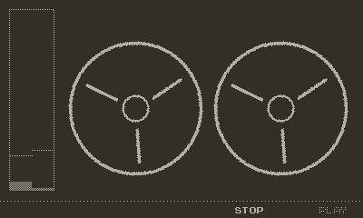
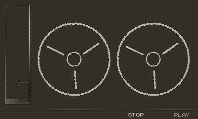
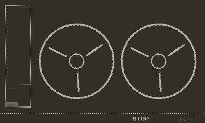
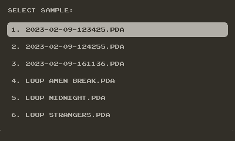

Home / Playdate / Tape Looper
Tape Looper is a mini audio recorder and live music tool for Playdate that lets you load samples recorded from the built-in microphone or from a higher quality external mic. You can change the playback speed, reverse direction, set loop points and add delay effects. Recorded samples can be saved to the device and loaded again later, or saved to computer via USB cable.
Note. If you want general purpose audio recorder for the Playdate give Field Recorder a try

